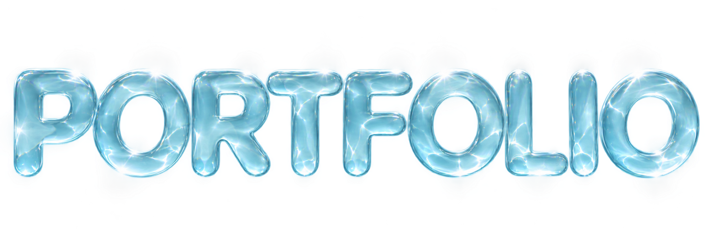
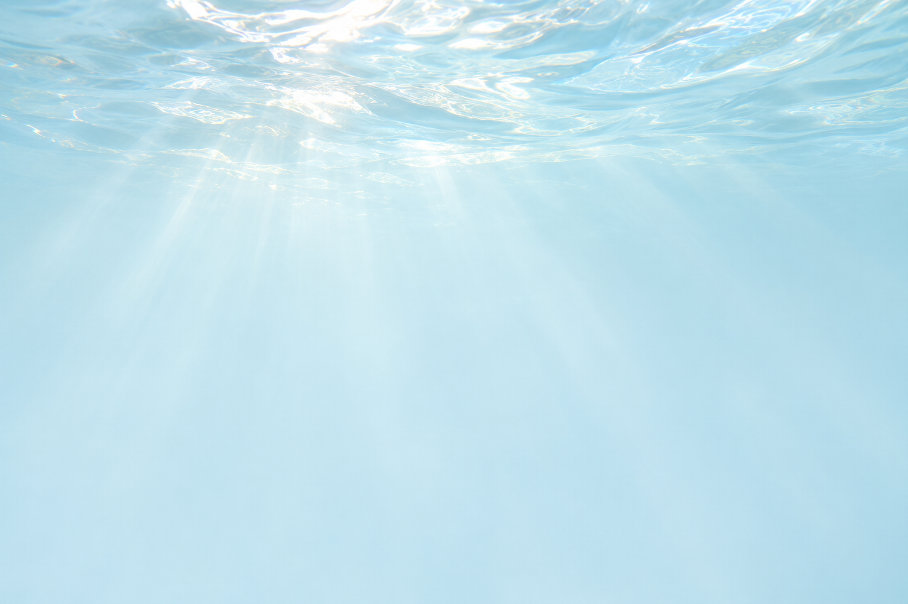
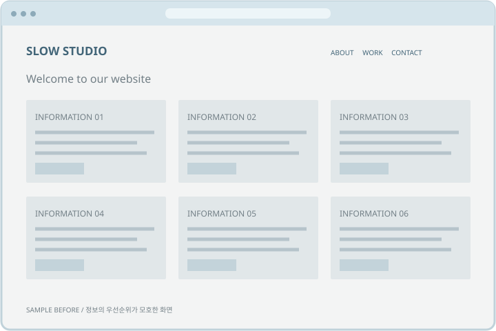

01 / CONTENT
PERSONAL EXPERIMENT · 진행 중
매일 하나, 콘텐츠 만들기
기획부터 제작과 업로드까지. 사용자 반응을 보며 다음 영상을 만들어갑니다.
DIVE INTO MY WORK

관심을 따라 관찰하고, 경험을 만들어갑니다.
디자이너 박세진
BELOW THE SURFACE
떠오르는 물방울을 눌러
작업의 이야기를 들여다보세요.
02 / CONSISTENT EXPERIMENTS
조회수보다 오래 남는 건,
사람들의 반응을 이해해가는 과정입니다.
하루에 영상 하나.
작지만 멈추지 않는 시도.
마케팅을 직접 경험하기 위해 매일 영상을 만들어 유튜브, 틱톡, 인스타그램에 올리고 있습니다. 첫 주에는 조회수가 약 1천 회 내외였지만, 꾸준히 제작하고 반응을 관찰한 3주 차에는 53만 회에 도달한 영상이 나왔습니다.
어떤 주제에 관심을 보이는지, 무엇을 더 보고 싶어 하는지. 반응을 살펴보고 다음 영상에 반영하는 일을 반복합니다. 이 경험을 사용자의 입장에서 생각하는 디자인으로 이어가고 싶습니다.
운영 기간별 영상 조회수 사례입니다. 전체 평균이나 동일 영상의 증가 추이가 아닙니다.
매일 하나의 콘텐츠를 완성합니다.
어떤 내용에 반응하는지 살핍니다.
관심을 끈 이유를 질문합니다.
다음 시도에 배운 점을 반영합니다.
03 / ABOUT ME

완벽한 시작보다,
직접 해본 경험을 믿습니다.
물멍을 좋아합니다. 조용히 흐르는 물을 보고 있으면 작은 변화도 눈에 들어옵니다. 작업할 때도 사용자가 머무는 곳과 지나치는 곳을 세심하게 살피는 사람이 되고 싶습니다.
콘텐츠를 만들고, 앱의 흐름을 고민하고, 웹 화면을 정리하며 저만의 시선을 넓혀가는 중입니다.
개인 SNS 콘텐츠 제작·운영 진행 중
앱·웹 프로젝트 실제 작업 정보 추가 예정
아래는 배치 예시입니다. 실제 사용 도구와 작업 범위로 교체할 예정입니다.
04 / EXPERIENCE ARCHIVE
결과만큼, 만들어가는 시간도 기록합니다.
콘텐츠 외 항목은 실제 작업으로 교체할 구성 예시입니다.
PERSONAL EXPERIMENT · 진행 중
기획부터 제작과 업로드까지. 사용자 반응을 보며 다음 영상을 만들어갑니다.
PROJECT PLACEHOLDER
문제 정의와 화면 흐름을 소개할 자리입니다. 실제 앱 프로젝트를 담을 예정입니다.
PROJECT PLACEHOLDER
웹 화면의 구조와 표현을 개선한 과정을 실제 작업 이미지와 함께 담을 예정입니다.
SCROLL TO EXPLORE 스크롤하면 오른쪽의 경험으로 이어집니다
05 / APP PROJECT
APP CONCEPT / SAMPLE
바쁜 하루 사이,
작은 쉼을 시작하는 경험.
휴식을 계획하는 일마저 복잡하지 않도록. 지금 가능한 시간부터 고르고, 짧은 쉼으로 이어지는 앱을 가정한 기획 예시입니다.
06 / WEB DESIGN
원하는 정보를 찾기 어려운 페이지를 가정해, 정보의 우선순위와 행동 경로를 정리했습니다.

정보의 중요도가 비슷하게 표현되고, 주요 행동으로 이어지는 안내가 분산된 상태를 가정했습니다.
핵심 메시지와 버튼을 먼저 보여주고, 관련 내용을 묶어 위에서 아래로 읽히는 순서를 만들었습니다.
LET’S MAKE THE NEXT RIPPLE
작은 질문과 새로운 시도를 기다립니다.
연락처와 실제 작업 이미지는 다음 수정 단계에서 등록할 예정입니다.
맨 위로